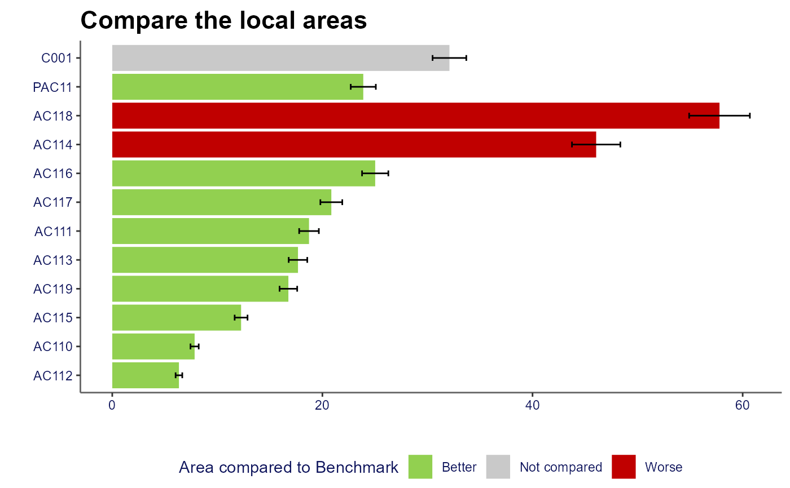

Returns ggplot of compare areas chart
compare_areas(
data,
area,
value,
lowerci,
upperci,
fill,
order = "desc",
top_areas,
title = "",
xlab = "",
ylab = "",
legend.position = "bottom",
display.values = FALSE,
dps = 1
)data.frame or tibble which will be fed into ggplot functions. This object should contain the fields used for the arguments within this function
unquoted field name for the field containing the area variable which will be plotted on y axis
unquoted field name for the field containing the value variable which will be plotted on x axis
unquoted field name for the field containing the variable to be plotted as lower confidence interval (optional)
unquoted field name for the field containing the variable to be plotted as upper confidence interval (optional)
unquoted field name for the field to be used to determine the colouring of the bars; usually reflecting significance. The values that values that can be used in this field with predetermined colours are: 'Better', 'Higher', 'Similar', 'Lower', 'Worse', 'Not compared', 'None'
one of "alphabetical", "asc" or "desc" - to determine how to order the bars
character vector; the areas to fix at the top of the chart. These values must exist within the area field of the data provided
string; title of chart
string; x-axis title
string; y-axis title
string; the position of legend ("none", "left", "right", "bottom", "top", or two-element numeric vector)
logical; whether or not to display the rounded values next to the bars on the chart
number; number of decimal places to be displayed when display.values = TRUE. The default is 1.
a ggplot of a compare areas chart
Other quick charts:
box_plots(),
compare_indicators(),
map(),
overview(),
population(),
trends()
library(dplyr)
df <- create_test_data()
parent <- "PAC11"
top_names <- c("C001", parent)
ordered_levels <- c("Better",
"Similar",
"Worse",
"Not compared")
df_ca <- df %>%
filter(IndicatorName == "Indicator 3",
(AreaCode %in% top_names |
ParentAreaCode == parent))
p <- compare_areas(df_ca, AreaCode, Value,
fill = Significance,
lowerci = LCI,
upperci = UCI,
order = "desc",
top_areas = top_names,
title = "Compare the local areas")
p
